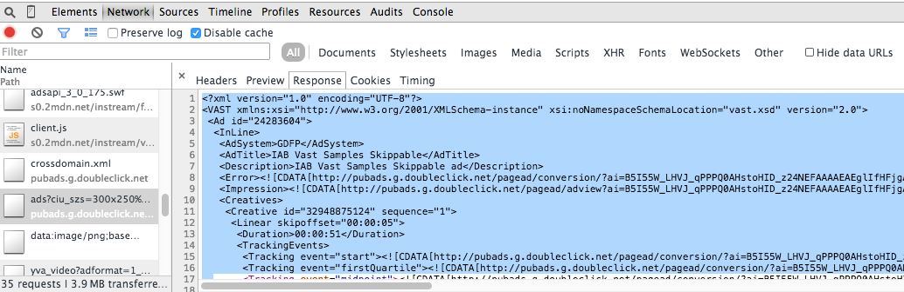
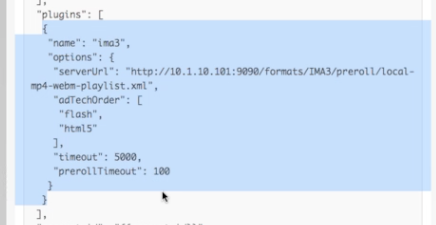
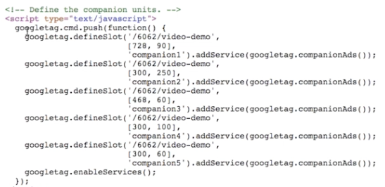
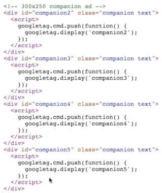

VMAP: "ad playlist"; specifies pre-roll, mid-roll(s) and post-roll (URL to a VMAP document); format is XML
VAST: Individual ad details; VMAP points to a VAST document with information about the ad

VPAID: Like VAST, but a standard for interactive ads; ad contains a quiz or goofy game (no BC Player support yet)
IMA constraint: 2 versions of IMA library, Flash or HTML version, cannot use both
Basic implementation of IMA Plugin

Dynamic Ad Targeting: Configuration of IMA Plugin done after gathering customer info (for example viewers age, then select ad rule)

